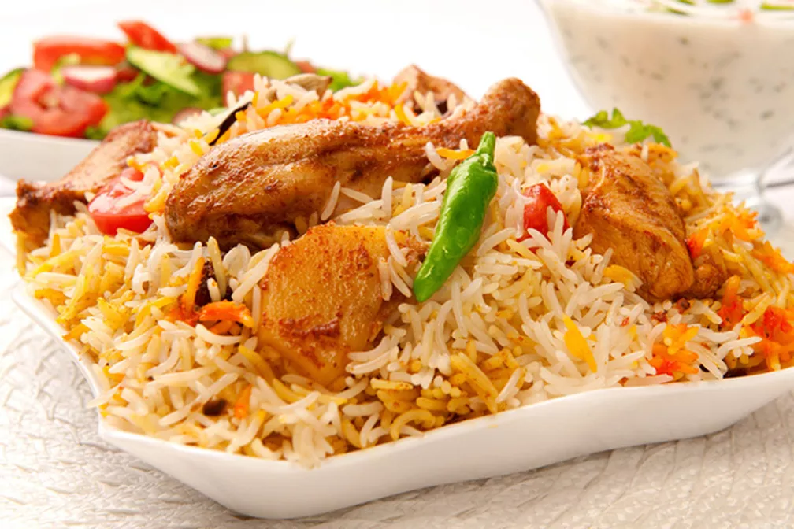

Chicken Biryani is a famous recipe of South Asian countries full of healthy ingredients that include chicken, Boiled White rice, and extra ingredient fried potatoes pieces. This recipe is famous with different names according to cities and their culture like in Pakistan most famous biryani recipe is Hyderabadi biryani and Karachi Biryani and in India Mumbai biryani and Hyderabadi Biryani. People like to eat this recipe with different taste some people like to add fried potatoes in biryani.Here, we will tell you how to cook this delicious recipe by using given ingredients.
Ingredients
- 2 pounds chicken
- 1.5 pounds White boiled rice
- 1 cup water
- 1 cup cooking oil
- 1 teaspoon garlic and ginger paste
- 1/2 teaspoon salt
- 2 teaspoons Red pepper
- 4 teaspoons Biryani masala
- 2 bay leafs
- 2 chopped red onions
Steps
-
Cooking Directions for Red onions 1. Take a wok and add half cup of oil over medium-high heat 2. Add half cup of chopped onions in heated oil 3. Cook them until dark brown color 4. Put Out them in a bowl after fry
-
Cooking Directions for chicken 1. Put half cup of in a large wok over medium-high heat 2. Now add 4tb spoon biryani masala and garlic paste in oil 3.Add salt, red, and black pepper 4.Add bay leaf and half cup of water and cook them for 5 to 10 minutes 5.Now add chicken and half cup of water and mix these ingredients and cook them well 20 minutes 6. During cooking of chicken make normal gravy for biryani recipe
-
Cooking Directions for Biryani 1. After cooking the chicken with gravy Now Add boiled rice on chicken 2. Cover them for 10 minutes over Low-medium heat 4. After 10 minutes Now mix them well that all ingredients mix with each other 5. You can also add some pickle for spicy taste and mix with biryani
-
You can serve this recipe with raita and salad and for more taste, you can add some pickle. People of South Asian countries like to eat this recipe with spicy taste and other ingredients. In Hyderabadi biryani recipe, fried potatoes are used with chicken for extra flavor
-
Chicken Biryani Recipe full Nutritional Information Chicken biryani is full of healthy ingredients that include chicken and boiled rice. These ingredients are full of healthy calories, vitamins, and proteins. Here, we will tell you about the nutrition information of this recipe with quantity. Total Calories 2,080 Sodium 760 mg Total Fats 68 g Potassium 2,147 mg Saturated 38 g Total Carbs 232 g Polyunsaturated 3 g Dietary Fiber 22 g Monounsaturated 16 g Sugar 34 g Trans 0 g Protein 137 g Cholesterol 399 mg Vitamin A 73% Calcium 69% Vitamin C 8% Iron 75%
Return to main page